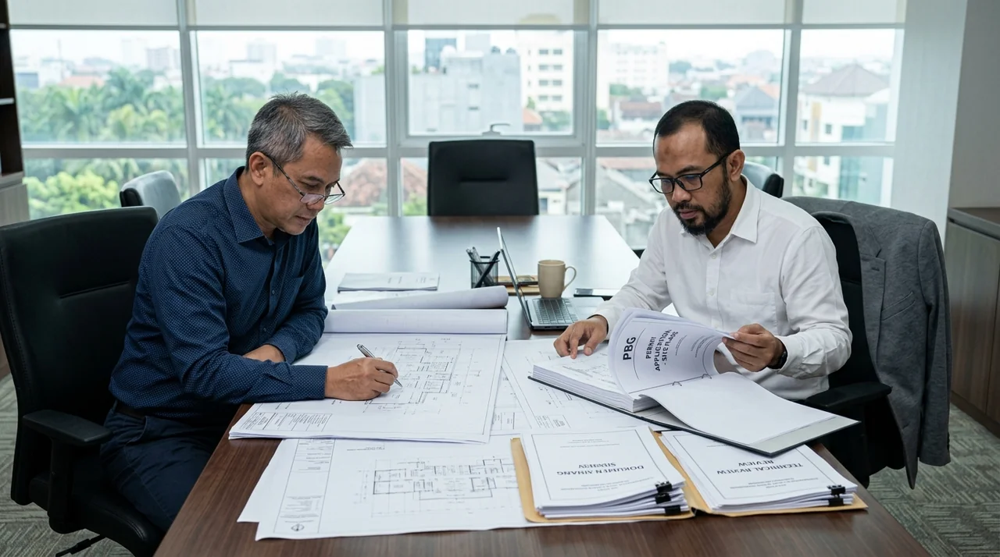

1. Perbedaan Esensial Antara Dokumen PBG dan Dokumen SLF
PBG adalah izin mendirikan atau merenovasi bangunan sebelum konstruksi fisik dimulai, sedangkan SLF adalah sertifikat kelaikan fungsi setelah bangunan selesai dan siap digunakan.
Persetujuan Bangunan Gedung (PBG) diwajibkan sebelum pelaksanaan peletakan batu pertama proyek baru atau renovasi yang mengubah denah dan struktur. Tanpa PBG, bangunan berisiko terkena segel peringatan dari Satpol PP.
Sementara itu, Sertifikat Laik Fungsi (SLF) adalah bukti yuridis bahwa bangunan telah memenuhi standar keselamatan konstruksi, kesehatan ventilasi, kenyamanan tata ruang, dan kemudahan akses disabilitas. SLF berlaku 20 tahun untuk rumah tinggal dan 5 tahun untuk gedung komersial.
- Pastikan Arsitek STRA: Pastikan berkas arsitektur ditandatangani oleh arsitek yang memiliki Surat Tanda Registrasi Arsitek (STRA) aktif agar tidak tertolak sistem SIMBG.
- Uji Tanah Sondir: Lakukan uji tanah sondir resmi sebelum membuat laporan struktur; dinas PUPR menolak perhitungan struktur tanpa data tanah riil.
- Siapkan As-Built Drawing: Untuk pengurusan SLF gedung eksisting, siapkan gambar terbangun (As-Built Drawing) yang mencerminkan kondisi riil di lapangan.
2. Persyaratan Dokumen Teknis Pengajuan SIMBG di Jawa Timur
Daftar berkas teknis wajib mencakup DED Arsitektur, Laporan Perhitungan Struktur Tahan Gempa, dan Desain MEP terpadu.
Dokumen arsitektur mencakup denah, tampak, potongan 1:100, rencana pola lantai, dan RKS bertanda tangan arsitek STRA. Dokumen struktur mencakup detail penulangan, laporan uji tanah sondir CPT, dan perhitungan gempa software SAP2000/ETABS bertanda tangan SKA Struktur.
Dokumen MEP mencakup diagram satu garis listrik (SLD), tata letak pipa air bersih dan kotor, septic tank biofil, instalasi proteksi petir, serta proteksi kebakaran hidran sprinkler.

Pemeriksaan kelengkapan dokumen teknis DED bersama tenaga ahli berlisensi resmi.
3. Tabel Estimasi Biaya Jasa Konsultan PBG & SLF di Jawa Timur
Tabel acuan tarif konsultansi penyusunan berkas DED dan pendampingan sidang SIMBG di kota/kabupaten Jawa Timur.
Tabel berikut memberikan panduan estimasi biaya jasa konsultansi perizinan berdasarkan klasifikasi dan luasan bangunan gedung.
| Klasifikasi Bangunan Gedung | Luas Bangunan | Dokumen Teknis yang Disiapkan | Estimasi Biaya Jasa Konsultan |
|---|---|---|---|
| Rumah Tinggal Sederhana (1-2 Lt) | < 150 m² | DED Arsitektur, Struktur Sederhana, MEP Dasar | Rp 4.500.000 – Rp 8.000.000 |
| Rumah Tinggal Mewah / Villa | 150 – 500 m² | DED Lengkap STRA, Laporan Analisa Struktur SAP2000 | Rp 9.000.000 – Rp 18.000.000 |
| Ruko Komersial (2-3 Lantai) | 150 – 400 m² | DED Arsitektur, Struktur, MEP, Kajian Proteksi Damkar | Rp 12.000.000 – Rp 22.000.000 |
| Gudang & Bangunan Pabrik | 500 – 3.000 m² | DED Baja/Beton, Uji Tanah Sondir, Kajian Lingkungan | Rp 25.000.000 – Rp 50.000.000+ |
| SLF Gedung Eksisting (Komersial) | > 1.000 m² | As-Built Drawing, NDT Hammer Test, Uji Kelaikan | Rp 30.000.000 – Rp 70.000.000+ |
4. Alur Sidang Tim Penilai Teknis (TPT/TPA) Hingga Dokumen Terbit
Konsultan mendampingi pemilik proyek menjawab masukan teknis dari tim penilai dinas hingga dokumen disetujui.
Setelah berkas diunggah ke SIMBG, dinas teknis PUPR daerah mengundang sidang verifikasi. Tim konsultan kami memaparkan kalkulasi struktur dan konsep proteksi bangunan. Setelah rekomendasi terbit, pemohon membayar retribusi daerah dan sertifikat resmi PBG/SLF diterbitkan secara elektronik.
Pertanyaan yang Sering Diajukan (FAQ)
Kesimpulan Praktis
Legalitas PBG dan SLF adalah pilar perlindungan hukum serta syarat mutlak kelancaran operasional bisnis properti Anda di Jawa Timur. Jangan biarkan investasi Anda terkendala masalah birokrasi perizinan.
Percayakan penyusunan dokumen teknis dan pengurusan SIMBG Anda kepada tim konsultan berlisensi resmi Kontraktor Bangunan! Hubungi kami untuk konsultasi perizinan gratis.